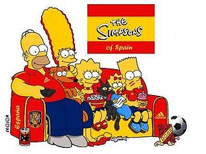
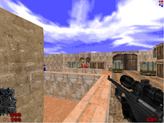

Los Simpson
 De: La Frikipedia, la enciclopedia extremadamente seria.
De: La Frikipedia, la enciclopedia extremadamente seria.
De la serie Programas de TV:
| Idioma original:
|
Inglés
|
| Creador:
|
Matt Groening
|
| Duración:
|
De 20 min más 10 de comerciales de la FOX
|
| No. Episodios:
|

|
| No. Temporadas:
|
Por ahora son 27, dentro de poco 58'9 (vamos, muchas)
|
| ¿Aún se transmite?:
|
Fox y TV Azteca. La última esta solo para México.
|
| Género:
|
Animación
|
| Nivel de frikismo:
|
Medio
|
| Películas:
|
Una, después de 18 años de que inicio
|
La hepatitis es epidemia en Springfield, eso explica su color amarillo
«Hijo, cuando participes en eventos deportivos, no importa si ganas o pierdes: sino ¡cuánto te emborrachas!»
~ Homer Simpson ejerciendo de padre modelo
«D'OH!!!»
~ Homer Simpson tras darse cuenta de su estupidez calvicie
«HA-HA!»
~ Nelson Muntz sobre la afirmación anterior
«Como solía decir cierto tío tuyo: "Mátalos a todos y que Diox los seleccione»
~ Marge Simpson compartiendo el saber familiar
«Me voy al bar de Moe!!»
~ Homer Simpson tras estrangular a Bart o pelearse con Marge
«-Ja, ¿tu mamá te compró ese pijama, Simpson?
-Pues claro, ella me los compra
-... ganaste esta vez»
~ Bart Simpson y Jimbo Jones discutiendo
«Voy a matar a Moe!!!, ¡¡WII!!»
~ Homer Simpson promocionando la Noentiendo Wii
«Normalmente no rezo, pero si estás ahí,¡salvame superman!»
~ Homer Simpson y sus creencias
«¡Bart!, como has roto la dentadura de tu abuelo, que ahora él te rompa la tuya»
~ Homer Simpson repartiendo justicia salomónica
«Gracias al Sanex no siento tanta ansiedad por ser una Simpson, siento ansiedad por tomar Sanex, pero se me pasa con el Zolop»
~ una politoxicomana Lisa Simpson sobre sus vicios
Dibujos animados de origen canadiense. Más bien eran personas de la vida real, los cuales fueron convertidos en dibujos por los estadounidenses, la FOX y Froot Loops. E.E.U.U y Canadá tuvieron una cruenta guerra ocasionada por esta situación. Por razones ocultas Estados Unidos la ganó.
Lenny y Carl al revelar lo que todos sabían desde que empezó la serie.
Origen
 Los Simpsons al ver que Estados unidos fue eliminado en el Mundial 2010.
Al ver por primera vez unos ejecutivos de la empresa los dibujos animados de Los Simpsons, explotaron de risa por el humor de estos seres humanos convertidos en dibujos (hay claras sospechas de que es lo más parecido al mejor chiste del mundo, expuesto en un sketch de los Monty Python). Desde ese momento decidieron inculcarles la cultura de su país. Más bien los obligaron. En ese entonces solo existían: Homer, Marge y el padre de Homer.
Más tarde Señor Patata.

Bart y Lisa tampoco se salvan de ser
pijos.
Cuando solo existían esos les dio Hepatitis y nunca se pudieron curar al aceptar que en su mierda de vida infectaron a toda una ciudad, la ciudad de Springfield (capital de Tatooine) donde habita una sub-especie humana que sobrevivió a la 3ª guerra nuclear y huyeron a tan valeroso planeta. La única diferencia que tienen con respecto al homo sapiens es su prospensidad a la obesidad y deficiencia mental.
Debido a los residuos radiactivos acumulados en su cuerpo, Homer va perdiendo pelo progresivamente y al igual que todos los sprinfildianos contrae la Hepatitis, lo que le da ese divertido tono amarillento.
Argumento

Típico capítulo de la serie, ¡hombre!, ¡que el americano no hace mucho!
Escena usual de la serie.
Mientras pasaban el tiempo encerrados o más bien convertidos en dibujos, decidieron tener otro hijo. Pero antes de que sucediera esto, la empresa que los dibujó y encerró había hecho toda una serie de Los Simpsons, así que salieron al aire. Esto fue en 1982 D.M.E.V. (después de el Monstruo de Espagueti Volador). Su primer capítulo fue un éxito, porque solo se veía a Homer bebiendo cerveza y también tuvieron su primer hijo, Bart.
Desde el primer capítulo y a pesar de las enseñanzas de los ejecutivos para convertirles en unos estadounidenses como Dios manda, Los Simpsons fueron un éxito porque reflejaban la vida fácil y verdadera en EE.UU, pero si llegan a saber que eran canadienses...
Actualmente los Simpsons habitan en la reserva de la biosfera conocida como Esprinfild, en donde gracias a las leyes de País de nunca jamás.
Personajes
Los integrantes de la familia Simpson se caracterizan por ser todos de color amarillo, por tener cuatro dedos y son:
- Pedro Picapiedra!), dormir la siesta, comer y correr riesgos absurdos, siempre y cuando no impliquen el impedimento de realizar alguno de los actos anteriormente citados. Además en su cabeza tiene una MG que es lo que todos creen pero en realidad son los gustos de su creador: "Muy Gay". Sueña con follarse a Ned Flanders.
- Marge Simpson: Mujer cactus azul, de nueva cuenta debido a la radiación. Primero era inteligente, pero, seguramente por la radiación del pene de su marido, se fue volviendo demente, hasta ser hoy mismo el segundo personaje más odiado de la serie. Rivaliza con Homer por cumplir su sueño que también es follarse a Ned Flanders. Y todo Springfield desea follarsela. Es más, si fuera humana hasta tu madre desearía follarla.
- Bart Simpson: 99 años, porque la serie tiene unos 20 años y aun no ha crecido , se quedo a los 10. Gemelo malvado de Hugo, niño gamberro que a veces te cae muy bien, y a veces te gustaría estrangularlo (te comprendemos, Homer). ¿Sabías que gracias a él aparecieron los emos?
- Lisa Simpson: 99 años, porque la serie tiene unos 20 años y aun no ha crecido, se quedo a los 8. Pequeña niña adoptada, en realidad es hija de Sir Isaac Newton. Es junto a Milhouse el personaje más odiado de la serie, porque es la típica sabelotodo que de todo tiene que criticar.
- Kang. Siempre lleva un chupete que le da inteligencia como para manejar armas y aun así ser la beba tierna e inocente de la casa.
- Abe Simpson: Benévolo Anciano poseedor de un trasntorno que lo vuelve mujer (también llamado viejo verde).
- Herbert Simpson: Hermano de Homer que logro descifrar el lenguaje de Maggie (tito herbito) y que tiene una voz muy parecida a la de Danny De Vitto.
- Hugo Simpson: El chico bueno de la familia que vive en el desván de la casa y se alimenta a base de cabezas de pescado (capítulo de Halloween VII o La Casita del Horror VII).
- Patty & Selma: Hermanas de Marge. Mantienen una gran amistad con su cuñado Krabappel están rodeadas de hombres y las tres se unen para formar el grupo mas sexy del momento, Las supremas de Mostoles. Una de ellas (Patty) tiene sueños eróticos con la señorita Krabappel.
- Televisor: Consejero mental/espiritual de Homer.
- Ayudante de Santa, Huesos o Botones de Santa Claus: Saco de pulgas de la familia y guardián secreto del Sr. Burns.
- Bola de Nieve I: Gato que muere atropellado por un carro antes del inicio de la serie (que mala pata).
- Bola de Nieve II: Gato gordo negro y feo de Lisa que fue atropellado por un carro.
- Bola de Nieve III: Otro gato de Lisa que muere.
- Coltrane (Bola de Nieve IV): Muere.
- Bola de Nieve IIIII: Gato gordo negro y feo que, vive con los Simpsons y con otra familia gay.
- Hulk: El wey verde que se coje a Bart en el episodio secreto 666.
Otros Personajes marginales

La versión anime de la susodicha serie. ¿Mola?
Bart y Lisa cambiando roles con su familia...
- Moe: El amargado dueño del bar de Moe (original ¿eh?). En realidad es un ente maligno que le saca información a la gente y es feliz en secreto. Era más secretamente feliz antes de saber que los travestis eran hombres, mucho mas feliz. Increíblemente más feliz...
- Flanders: El adorable vecinito de Homer. En realidad es un seguidor de satán que soborno a las animadoras para matar a su mujer. Gusta de decir chorradas acabadas en -ito o -illo que funden el cerebro de quien las escucha.
- Director Skinner: El director de escuela. Es un juerguista y afirman que se ha liado con el padre de Homer. Esta liado con Krabappel y mantienen un romance secreto que solo lo sabe Bart, hasta que los pillan en el armario de las escobas del colegio haciendo bebes (yo vi uno y me miro).
- Oficial Wiggun/Gorgory: Un policía que sigue los pasos del dueño de Rex. Gusta de comer porquería y donas que encuentra en la casa de los ladrones.
- Personaje de fondo: Un personaje que se ve de fondo de vez en cuando.
- Smithers: Un gay travestido amante de Stewie, personaje de Padre de Familia. Ademas, ama a Burns, pero solo por el dinero.
- Barney: Borracho que sigue los pasos de Barney el dinosaurio controla mentes.
- REVENTARLE la puta cabeza. También sale en la serie "Aquellos maravillosos años" (como no, sigue siendo el amigo del protagonista).
- Ralph: Niño empollón del cole. Está tarao. Se ve que es jusaista en un capítulo, porque hace el saludo típico de tal religión, el jusaismo.
- Apu Nahasanamapeemapetilam: El nombre lo dice todo.
- Rod & Tod: Hermanos. Son los hijos de Flanders. Con una sexualidad indecisa (gays en un episodio del futuro), estos dos hermanos nunca se han peleado entre ellos y son motivo de mofa entre sus compañeros.
- Señorita Krabappel: Profesora de Bart. Es una persona que se caracteriza por
ser un poco puta su poder de seducción y por estar siempre rodeada de hombres.
- Otto: Es el [[jebi] colago de la serie, se encarga de conducir el bus del cole a toda caña. Su sueño es formar parte de un grupo de heavy metal old school y estar todo el día follando, fumando porros y bebiendo birra. Es gran amigo de Bart y en más de una ocasión han intentado formar un grupo juntos. Su frase más celebre es dabuteeen y es un claro ejemplo del típico heavy macarra americano.
- Comedido: Un motero de la banda original "Hell's Satans". Como toda la banda, no siente atracción sexual por Marge. Además no le suena bien la palabra "currículo", prefiriendo decir "currículum" a pesar de que el jefe de la banda le recuerda que ambas están aceptadas.
- Lenny y Carl: Se cree que son una pareja de gays que viven juntos en un apartamento que Burns les regalo en la las afueras de Sprinfield y cuyo lema es "yo soy feliz si tu estas".
- Hans Topo. Conocido como el "hombre topo", al final de la serie domina el mundo... ¡Oops, conté el final sin querer!
- Nelson Muntz: Es un chico gamberro, que sale con la pandilla de gamberros del cole. Se ríe de las desgracias de otros.
- Sherry & Terry: Son dos hermanas gemelas. Corren rumores de que no son hermanas y están en pareja.
Unos problemas
Homer parece sufrir graves problemas mentales y, sobre todo, de olor corporal, cosa que no sabremos si es del todo cierta hasta que inventen televisores que permitan oler los elementos del programa.
Bart saca muy malas notas, lo cual da que pensar que a lo mejor no quiere que los alienígenas absorban su poca inteligencia. ¿Qué pasa por tener imaginación? Lisa es una adicta al colegio que espera desesperadamente escapar de la triste realidad que embarga a su familia: Vivir con un gorila sucio (Homer), un vándalo (Bart), una madre marimandona (Marge), y un bebé alienígena con problemas para hablar (Maggie). ¡¡¡Son lo mejor!!!
El misterio de los Simpson
Científicos de todo el mundo se están rompiendo los cuernos para desentrañar el misterio que plantean Los Simpson en España:
- ¿Por qué cojones Antena-3 maltrata de esta manera su mejor serie: la más alabada por la crítica y la que le da más audiencia?
Deberías ver lo que hacen en TV Azteca, hasta los censuran.
- Cortan los títulos de crédito, cortan el inicio, mezclan temporadas, cambian las voces de todos los personajes, repiten todos los episodios de forma obsesiva, desordenan los capítulos, meten pausas publicitarias de un cuarto de hora
sólo los sábados por la noche en un capítulo de 20 minutos y de vez en cuando reducen la serie a un cuadrito pequeño para dedicar el resto de la pantalla a explicar qué programa darán dentro de un año a continuación.
- Por supuesto que Dapena 3 son unos manguis y unos maleducados sin ningún respeto al espectador... Pero de todas formas, ¿no sería mucho más fácil ir poniendo los capítulos ordenados, primero el primero, luego el segundo, etcétera? (
Porque no vieron Barrio Sésamo)
- El Doctor Turnip, de la Universidad de Connecticut, opina que lo hacen adrede, porque así siempre hay gente que se queda con la esperanza de que salga algo nuevo.
- El Doctor Nabo, de Minessota, opina que tienen contratado a un mileurista que se siente puteado y quiere vengarse saboteando el sistema desde dentro.
- La universidad de Cambridge sostiene que el encargado de poner los capítulos en Antena-3, es el creador de Padre de Familia.
- La universidad de Oxford afirma rotundamente que el hecho de que Jaime Cantizano que sirve tanto para un roto como para un descosido.
- La CIA argumenta que en realidad son dos los becarios que escojen los capítulos de los Simpson que se emiten cada día, y se lo toman a cachondeo y juegan a ver quién es capaz de emitir más veces su capítulo favorito antes de que los echen de la emisora.
- Halfredo opina que las células morfoatómicas no combinan bien con la chaqueta vaquera.
- El médico opina que si Ralph no se metiera tanto el dedo en la nariz no sangraría de la nariz.
- La fuente de sabiduría secreta que nadie sabe donde está opina que el director de antena 3 es un mono.
- Es probable que la verdad verdadera del asunto nunca salga a la luz.
Frases Celebres (la mayoría, de Homer)
 Luego del apocalipsis, así terminó Springfield.
Drácula vestido de Krusty.
- Bart: Yonofui!!!
- Homer: Spideeeercerdo spidercerdo, hace lo que un spidercerdo hace!!!
- Homer: D'OH, D'OH, D'OH, D'OH, D'OH, D'OH!!!
- Dr. Nick Riviera: "Primero cortamos bajo el bloqueeo, luego cortamos por aquí. Luego cortamos esta coosa... la cosa se atoro en mi reloj".
- Homer mira por un telescopio: "¡AAAAAAHHHHHH! ¡Nos atacan monstruos del espacio!". "Papá, es una polilla..." le dice Lisa.
- El abuelo se está meando en el coche y le dice: "¡Homer! ¡Tengo que mear! Homer dice: "Venga, solo tenemos que cruzar dos veces el horizonte..."
- Locutores de radio: "Puedes elegir entre 10,000 USD o un elefante" Bart: "El dinero suena tentador, pero quiero el elefante" LdR: "El elefante es un premio de broma, elige el dinero" Bart: "¡Quiero mi elefante!" Homer: "Bien por ti, defiende tus derechos". (Homer piensa): Ouch!
- "Podemos ir a una casa de te-shinto donde practicamos el tradicional... ¡Corre Bart!"
- ¡Mosquis!
- Mmm, sacrilegioso...
- Mmm, útil...
- Mmm, un acuerdo...
- Mmm, rosquillas...
- Mmm, crimen organizado...
- Mmm, pelucas gratis...
- Mmm, algo...
- Mmm, urinarios limpios...
- Mmm, gratis...
- Mmm, Marge...
- Mmm, lo que sea....
- "Yo ya soy un hombre muy difícil de sorprender. ¡Mosquis, un coche azul!"
- "¿Recuerdas lo que te dije de huir de los problemas? Pues vámonos"
- "Vivir cada día como si fuera el último… ¡Buaaa, voy a morir!"
- "Tendrá todo el dinero del mundo... pero hay algo que jamás podrá comprar... un dinosaurio."
- Camarera: "¿Qué quiere de cenar, una o dos chuletas?" Homer: "Ambas cosas".
- "Tengo dos preguntas: uno, dónde está la flauta, dos, démela.
- Marge: "Homer, nos vas a matar a todos" Homer: "O moriré en el intento"
- Camarero: "¿Qué quiere usted de comer?" Homer: "El filete más grande que haya" C: "¿Y de beber?" Homer: "Albóndigas".
- "¡¿Operadora?! ¿Cuál es el número del 911?"
- "Hijo, sé que puedes leerme el pensamiento... Miau, Miau, Miau, Miau, Miau..."
- "Os habéis esforzado... ¿y para qué? Para hacer el ridículo. La moraleja es: No os esforcéééis... ¡Je jeje!"
- "Homer: "¿Cómo va a hacer la educación sentirnos mejor? Cada vez que aprendo algo nuevo me obliga a sacar algo que ya había aprendido. ¿Recuerdas cuando hice aquel curso de probador de vinos, que se me olvidó cómo conducir?" Marge: "¡¡Porque estabas borracho!!" Homer: (sonríe) "Uy, sí... y cómo."
- Marge: "Homer, no creo que debas hablarle así a los niños" -Homer: "No veo por qué no, soy su padre... soy su dueño" -Marge: Uhmmm... -Homer: "¡Está bien! 'Somos' sus dueños".
- SCULLY: "Esto es un detector de mentiras, [...] ¿lo ha comprendido?" -Homer: "Sí" (el detector explota).
- Marge: "Homer, vamos a necesitar una casa mayor..." -Homer "¡No que va! Lo tengo todo pensado. El bebe dormirá en la cuna de Bart, y Bart con nosotros hasta que cumpla los 21 -Marge: ¿¿No se volverá rarito?? -Homer: Ahí tienes a mi primo Mario -Marge: ¿¿Qué primo tuyo se llama Mario?? -Homer: Se convirtió en Maria en el 76, y se unió a una secta. Creo que se llama Madre Shabubu ahora..."
- "La vida es una aplastante derrota tras otra hasta que acabas deseando que se muera Flanders."
- "¡Marge! A Maggie se le han caido sus piernas de leche..."
- "Moe cree saber más de lo que el propio Moe sabe."
- Homer:(A Bart)"¡Robando! ¿No podrías aprender del tío que nos echa sermones en la iglesia? ¿El Capitán... no se cuantos?"
- Lisa: "Habrás echado la declaración de la renta, ¿verdad papá?" -Homer: "Pues claro que sí" -Lisa: "Pero no la del año pasado, sino la de este" -Homer: "¡¡¡AHHHHHHH!!!" -Homer: "A ver, voy a hacerla rápido, necesito deducibles, regalos de trabajo! (le da a Marge el cuadro colgado sobre el sofá) toma Marge, sigue usando energía nuclear, Marge si te preguntan, Lisa es clérigo, Maggie son 7 personas y Bart fue herido en Vietnam. -Bart: ¡Mooooola!"
- Homer: "¡Descuida Marge, no les pasara nada a nuestros dos hijos" Marge: "¡Homer tenemos 3!"
Homer: "Margeeeee el perro no cuenta como hijo..."
- Homer: "¡Cojo otro muelle, y lo tiro por el retrete, y ya son 820 muelles los que el retrete se ha tragado!" -Marge: "¿Homer no estarás tirando los muelles por el retrete?" -Homer: ¿Qué cosas dices? ¡Cojo otro muelle y lo tiro por el retrete, y ya son 821 muelles los que el retrete se ha tragado...!"
- Homer: "¡Ooooh! ¡Son 280 páginas!" Marge: "Pero están a doble espacio" Homer: "¡¡YUJU!! Ya me llevo la mitad!"
- "Creo que Smithers me ha seleccionado por mi capacidad de motivación, porque dice que a mi lado parece que todos trabajan"
- (Homer totalmente demente, yendo al bar de Moe montado en un carrito): Vas a morir Moe!!!... (se desliza) ¡UUIIIIIIII! Vas a morir Moe!!!... (vuelve a deslizarse) ¡UUIIIIIIII!
- (El bar de Moe está en llamas) Moe: "¡Ah, Homer, gracias a Dios! ¡Tienes que ayudarme!" Homer: "Ya lo creo que te ayudaré... ¡¡A MORIR!!"
- Homer: "Moe, necesito que me prestes dinero" -Moe: "Bueno, normalmente les pido a mis deudores un depósito, pero como a ti ya te conozco te voy a romper las piernas por adelantado" -Homer: "¡No! ¡Las necesito para ir al trabajo! ¿No puede ser la cabeza?"
- Doctora: "Extraerle el lápiz de su cerebro podría incrementar sus capacidades neuronales considerablemente, aunque matarlo..." Homer: "Hummm... Incrementar mi capacidad de matar... ¡Acepto!"
- Bart: "¡Este es un uniforme chingao!" Marge: "Bart, ¿¿Dónde has aprendido a hablar así??" Homer (hablando por teléfono): "Sí, Moe, su equipo la chingó bien anoche. ¡Qué chingaos! ¡He visto equipos chungos, pero el suyo es la panda de chungos más chunga que jamás he chingao!"
- Homer: "Se que nunca he hablado contigo ni te he pedido nada, pero si estas allá arriba, ¡Sálvame Superman!"
- Marge: "¿Contrataste a la mafia para eliminar a mis competidores con salvajes palizas e intentos de asesinato?" -Homer: ¿Con esas palabras?... Sí.
- Homer: "El sitio más caluroso de la Tierra es el Sol".
- Homer: "En el fondo del maaaar, en el fondo del maaaar, no hay chismes de vecinas, solo ricas sardinas en el fondo del maaaar" Marge: "¿Esto es lo único que se te ocurre?, ¿viajar en el fondo del mar? Así no iremos a ninguna parte" -Homer: "Pues con esta actitud seguro que no".
- Homer (el primer día de colegio de Bart): "Hijo, en tu primer día de colegio quiero darte el mismo consejo que me dió mi padre en tal ocasión" (Homer se recuerda de niño) Abuelo: "Homer, como eres tan tonto como una mula pero más feo, si algún desconocido te dice que te vayas con él , ¡te vas con él!" (en el presente) Homer: "Maldita infancia traumática..."
- Lisa: "No te extrañe que no tengamos capacidad de concentración, nos pasamos el día ante el televisor" Homer: "¡No vuelvas a hablar así de la tele! Desagradecida... ¿Qué había dicho? Capacidad de con, de conce.. concetr... ¡Concentración, eso!"
- Bart y Lisa: "¡¡Papá, hemos hecho algo terrible!!" Homer: "¿Os habéis cargado el coche?" Bart y Lisa: "¡NO"! Homer: "¿Habéis resucitado a los muertos?" Bart y Lisa: "¡SÍ!" Homer: "¿Pero al coche no le pasa nada?" Bart y Lisa: "Ajá..." Homer: "Eeentonces no importa..."
- "Hijo, en la vida hay tres tipos de personas, las que saben contar y las que no".
- Homer: "¡Quiero mi bocadillo!, ¡Quiero mi bocadillo! ¡Quiero mi bocadillo!"
- Homer (después de haber cazado a Molloy, el Ladrón Felino): "Bueno, señor Molloy... Ya ve que el gato ha sido cazado por la persona que dijo que lo cazaría" Carl: "Que ironía".
- Marge (al ver que Bart se ha convertido en vampiro): "Estoy preocupada por Bart. Ahora le da por chupar sangre... lo mismo mañana se pone a fumar".
- Tod Flanders: "¡Con la de hierro que tiene!"
- Homer al encontrar a Bart estudiando su manual de boy scouts: "¡Hombre, pero si es el líder de la Patrulla de los Giliexploradores, empollando sus lecciones para cursis!"
- Homer: "El matrimonio es como un ataúd, y cada hijo es como un clavo más".
- Homer: "Una mujer es como un refrigerador... 280 kilos, miden dos metros..."
- Homer: "Pensandolo mejor, una mujer es como una cerveza, dulce, fresca, y pisotearías a tu madre por conseguir una (se bebe una cerveza) pero no te basta con una, tienes que tomártelas todas.
- Homer: "Un día más de trabajo y otra caja de bolígrafos choriceada"
- Homer (pensando): ¡Seguro dental! ¡Lisa necesita un aparato! ¡Seguro dental!¡Lisa necesita un aparato! ¡Seguro dental! ¡Lisa necesita un aparato! (hablando) Espera... si no tengo seguro dental ¡Tendré que pagar el aparato de Lisa!"
- Homer: "Fue mi primer día..."
- Quimby: Por favor, no dejéis que me mate, ¡soy demasiado rico para morir!
- Homer a Krusty: En fin... ¿De qué estabamos hablando?, ¡¡MOSQUIS!! ¡¡Un payaso! ¡Jijijijijijijji!
- Homero pide una nueva cerveza a Moe, cuando Homer la prueba dice que sabe diferente, sale la fábrica de cerveza y los perros se están bañando en ella, el encargado la prueba y dice "Mmmmm le falta más perro"
- Homer: "Todos los matrimonios se hunden menos el mío. El problema es la comunicación. ¡EXCESO de comunicación!
¿Sabías que...?
- ...En el videojuego de Los Simpsons de Xbox 360, hay un logro que dice así? (Verídico)

|
Logro Desbloqueado
Pulsa Start - 0 G
Probablemente el logro más difícil de la historia...
|
- ...Cualquier cosa que diga Simpsons es amarilla?
- ...La vergüenza te pone rojo la vergüenza ajena te pone amarillo?
- ...El Luisma es el verdadero creador de Homer Simpsons? De dónde crees entonces que sacan las frases, eh?
- ...Los Simpsons y todos los personajes de
Esprinfild Springfiled, tienen la piel amarilla por las radiaciones de la central nuclear?
- ...Y que
Miljaus Milhouse y toda su familia, tienen el pelo y las cejas azules también por dichas radiaciones?
- ...Hay un pez de tres ojos?
- ...2010?
- ...Una inanimada barra de carbono consiguió convertirse en el jefe de la central nuclear de Springfield?
- ...Los Simpsons en el 2040 se convierten en robots?
- ...Parece que esta serie no se va a terminar nunca??
Enlaces externos
Autor(es):
- Krusher
- Nexo
- Fordus
- Hari Seldon
- Juantxorena
- Roura356a
- Sebator
- Tankostro
- Max Slug
- TheOm3ga
Frikipedia 2005-2016, Licencia
GFDL 1.2 - Extraído por FrikiLeaks